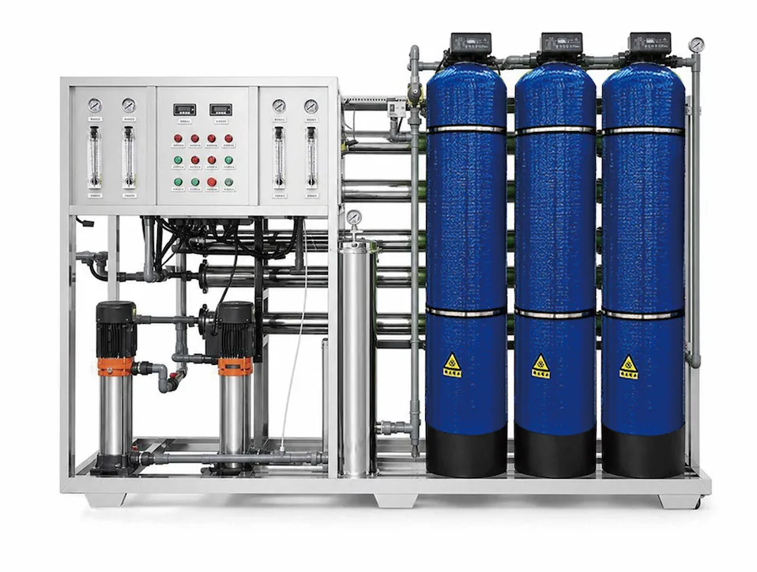

Прамысловыя сістэмы RO і апраснення марской вады · #05 · 1000-3000 L/h
Перад запытам прапановы пацвердзіце злучэнне, памеры і патрабаванні праекта.
Прамысловыя сістэмы RO і апраснення марской вадыПерад запытам прапановы пацвердзіце злучэнне, памеры і патрабаванні праекта.

Перад запытам прапановы пацвердзіце злучэнне, памеры і патрабаванні праекта.
Прамысловыя сістэмы RO і апраснення марской вадыХарактарыстыкі могуць адрознівацца ў залежнасці ад канфігурацыі. Пацвердзіце канчатковыя патрабаванні перад прапановай.
| Product Type | Three-Tank Pretreatment Integrated Skid RO Equipment 1000-3000 L/h |
|---|---|
| Operating Mode | Full automatic intelligent operation, with manual service mode according to project needs |
| Treatment Process | Automatic sand tank + automatic carbon tank + automatic softening tank + precision filter + reverse osmosis |
| Pure Water Flow | 1000-3000 L/h |
| Feed Water | Tap water and groundwater |
| Feed pressure | 0.1-0.4 MPa |
| Project customization | Project layout and controls can be adjusted after water-source review |
| Application | Commercial drinking-water and water-treatment projects |
| OEM/ODM | Configuration is confirmed by project specification |
| MOQ | Confirmed by capacity, configuration and OEM level |